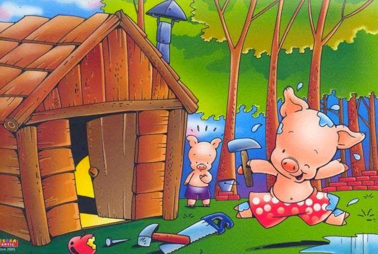
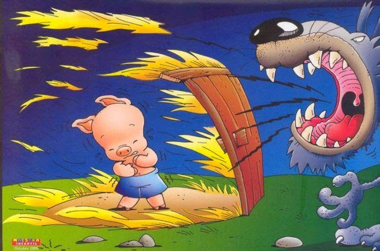
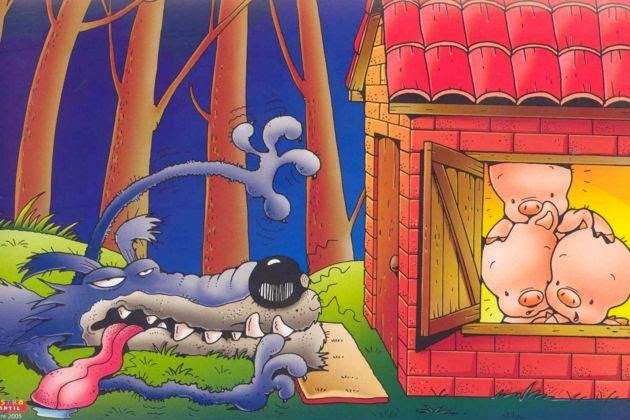

Tiempo atrás, en el corazón del bosque, vivían tres cerditos que eran hermanos. El lobo siempre andaba persiguiéndoles para comérselos. Para escapar del lobo, los cerditos decidieron hacerse una casa...
El pequeño la hizo de paja, para acabar antes y poder irse a jugar
El mediano construyó una casita de madera. Al ver que su hermano pequeño había terminado ya, se dio prisa para irse a jugar con él
El mayor trabajaba en su casa de ladrillo. - Ya verán lo que hace el lobo con sus casas. Riñó a sus hermanos mientras éstos se lo pasaban en grande.
El lobo salió detrás del cerdito pequeño y él corrió hasta su casita de paja, pero el lobo sopló y sopló y la casita de paja derrumbó.
El lobo persiguió también al cerdito por el bosque, que corrió a refugiarse en casa de su hermano mediano. Pero el lobo sopló y sopló y la casita de madera derribó. Los dos cerditos salieron corriendo de allí
Casi sin aliento, con el lobo pegado a sus talones, llegaron a la casa del hermano mayor. Los tres se metieron dentro y cerraron bien todas las puertas y ventanas. El lobo se puso a dar vueltas a la casa, buscando algún sitio por el que entrar. Con una escalera larguísima trepó hasta el tejado para colarse por la chimenea. Pero el cerdito mayor puso al fuego una olla con agua. El lobo comilón descendió por el interior de la chimenea, pero cayó sobre el agua hirviendo y se quemó la cola.
Escapó de allí dando unos terribles aullidos que se oyeron en todo el bosque. Se cuenta que nunca jamás quiso comer cerdito.
En el mundo nada llega fácil, por lo tanto, debemos trabajar para lograr nuestros sueños